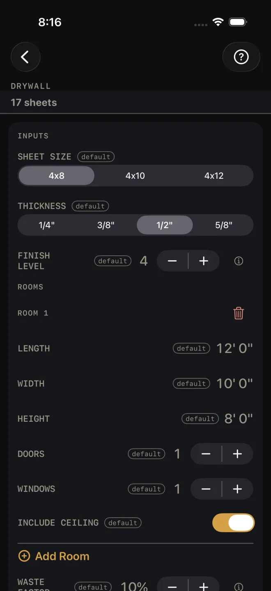
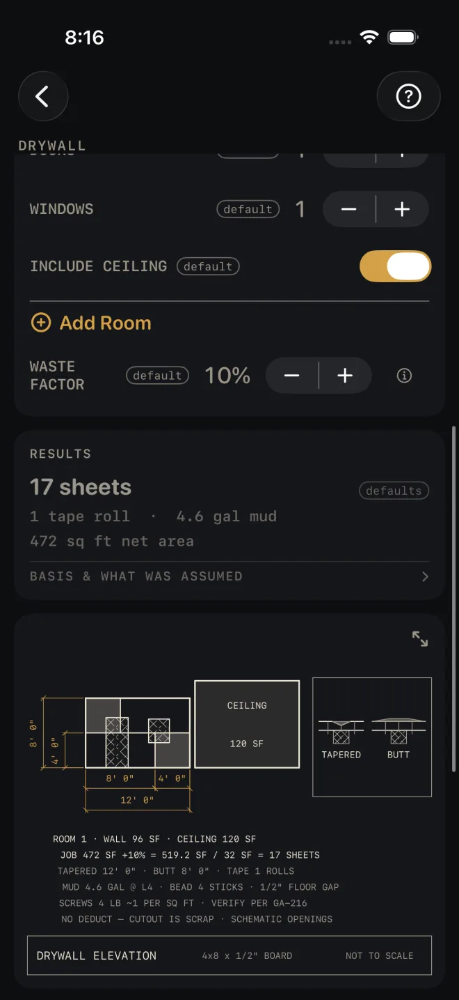
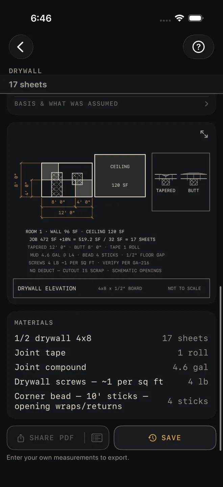

Drywall
What it's for
A board takeoff for one room or a whole house. You list the rooms and walk away with a sheet count, tape, joint compound, screws and corner bead, plus an elevation of the first room's longest wall with the board hung on it. It is an order quantity, not a code check.
Step by step
The example is the screen as it opens: one 12' by 10' room with 8' walls, a door, a window and a ceiling, hung in 4x8 board.

1 3 4 5 6- SHEET SIZE — the board you are buying: 4x8, 4x10 or 4x12. Leave it at 4x8.
- THICKNESS — 1/4", 3/8", 1/2" or 5/8". This names the board on the material list. It does not change any quantity.
- FINISH LEVEL — 0 to 5, how far the board is finished, from left bare up to a skim coat over the whole surface. A higher level buys more joint compound. Leave it at 4. At 0 the board is hung and left bare — no tape, no mud, and neither row on the list.
- Under ROOMS, measure the room wall to wall along the floor for LENGTH (12' 0") and WIDTH (10' 0"), and floor to ceiling for HEIGHT (8' 0"). Tap a value to type your own.
- DOORS and WINDOWS — count the openings in the room. One of each here. The counts buy corner bead. They do not take board off the order.
- INCLUDE CEILING — on if you are boarding the lid as well as the walls.
- For a second room, tap Add Room and fill in its block the same way. The trash can at the top right of a block removes that room.
- WASTE FACTOR — the extra you buy for offcuts and breakage, in steps of 5%. It opens at 10%.
- Read the answer in RESULTS: 17 sheets, 1 tape roll, 4.6 gal mud, 472 sq ft net area.
- Scroll on to the drawing and the MATERIALS list. BASIS & WHAT WAS ASSUMED states the yields the list is figured on: no opening deductions, the corner bead per door and window, tape per 1,000 sq ft, mud per finish level and screws per square foot.
- Save or share the job with the buttons at the foot of the screen.

8 9 10Reading the results
The headline is the sheet count for every room together, with waste added and rounded up to a whole sheet. It also shows in a strip under the title whenever the results card is scrolled off screen.
Tape and mud. Tape is in whole rolls. Mud is in gallons and moves with FINISH LEVEL, down to none at level 0.
Net area is the walls, plus the ceiling where you included it, before waste. Door and window openings are not taken out — the cutout is scrap, and the drawing says so: NO DEDUCT — CUTOUT IS SCRAP.
The drawing is room 1's longest wall in elevation with the board hung horizontal, the ceiling as a tile beside it, and a detail of a tapered joint and a butt joint. The line JOB 472 SF +10% = 519.2 SF / 32 SF = 17 SHEETS is the sheet count worked out in front of you, so you can check it. The openings on the wall are schematic — the screen only knows how many there are, not their size or where they sit. The screw line ends VERIFY PER GA-216: the calculator buys screws by weight and does not set a spacing. Pinch to zoom, or tap the expand button in the strip above the drawing to open it full screen. See Reading the drawing.

10 11Materials is the order: board, joint tape, joint compound, screws by the pound, and corner bead in 10' sticks for the door and window wraps and returns.
SHARE PDF sends a sheet with the drawing, your inputs and the material list. The list button beside it sends the material list alone. SAVE puts the job in History. SHARE PDF and the list button stay dim until you change at least one input. SAVE stays lit, but while every input is still a default a tap only answers Enter your job's numbers first and saves nothing.
Common mistakes
- Expecting doors and windows to reduce the sheet count. They do not. They only add corner bead.
- Leaving INCLUDE CEILING on for a room where the lid is already up, or off for one where it is not. In the example the ceiling is 120 of the 472 sq ft.
- Changing THICKNESS and expecting the order to move. Only the name on the material list changes.
- Entering every room and leaving SHEET SIZE at 4x8 when you are hanging twelves. The count is by area per sheet, so set the board you are really buying.
Related
- Paint — the same rooms, once the board is finished
- Insulation — what goes in the wall before the board
- Framing
- Cut sheets and 1:1 templates
- Saving and History
- Reading the drawing